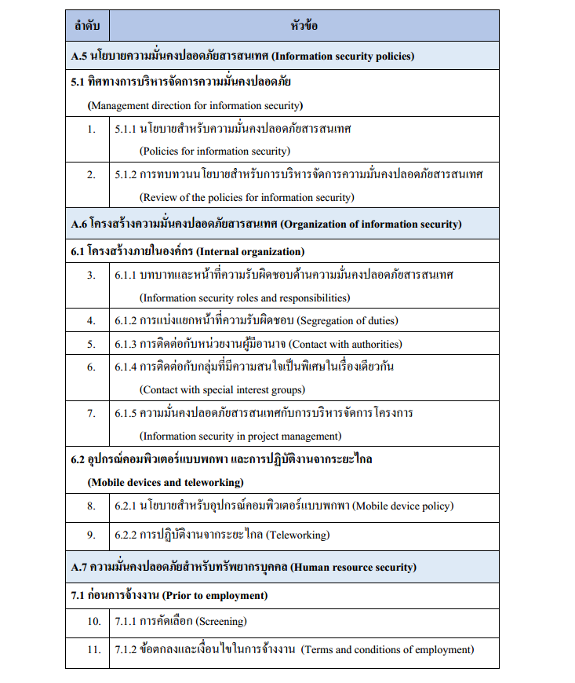
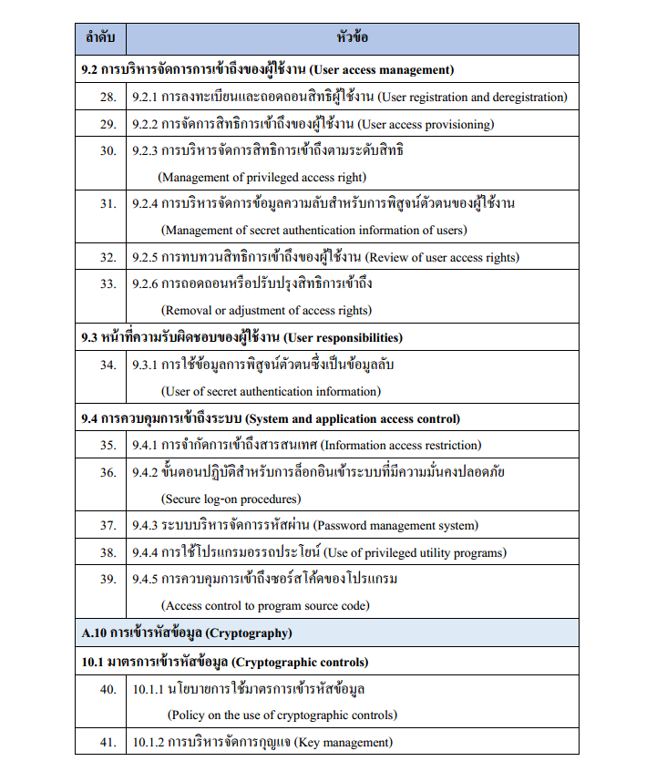
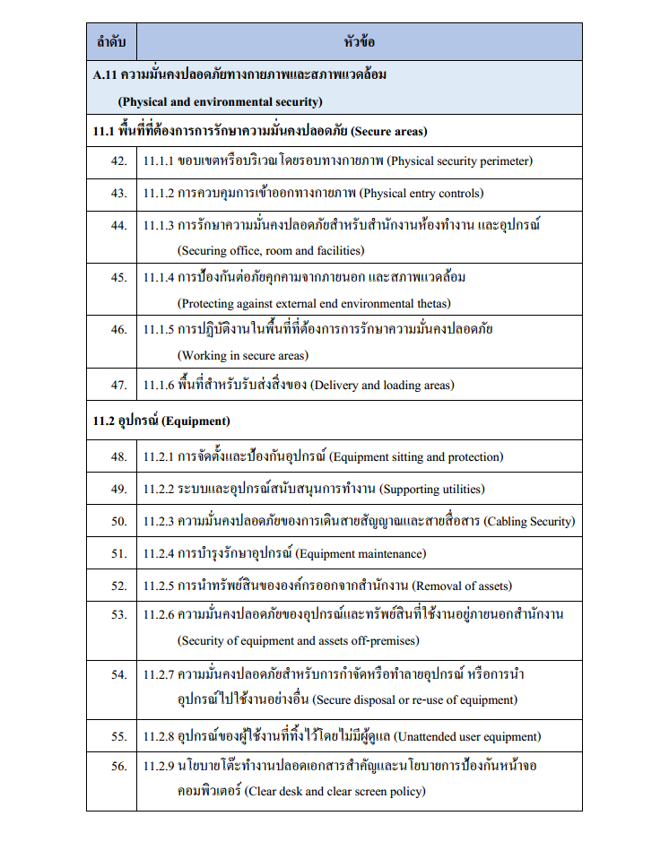
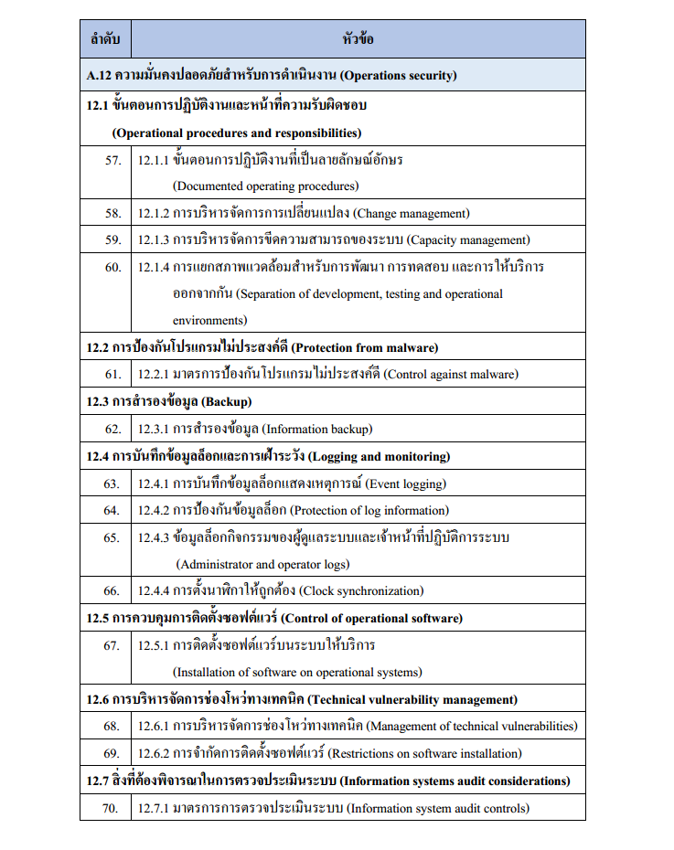
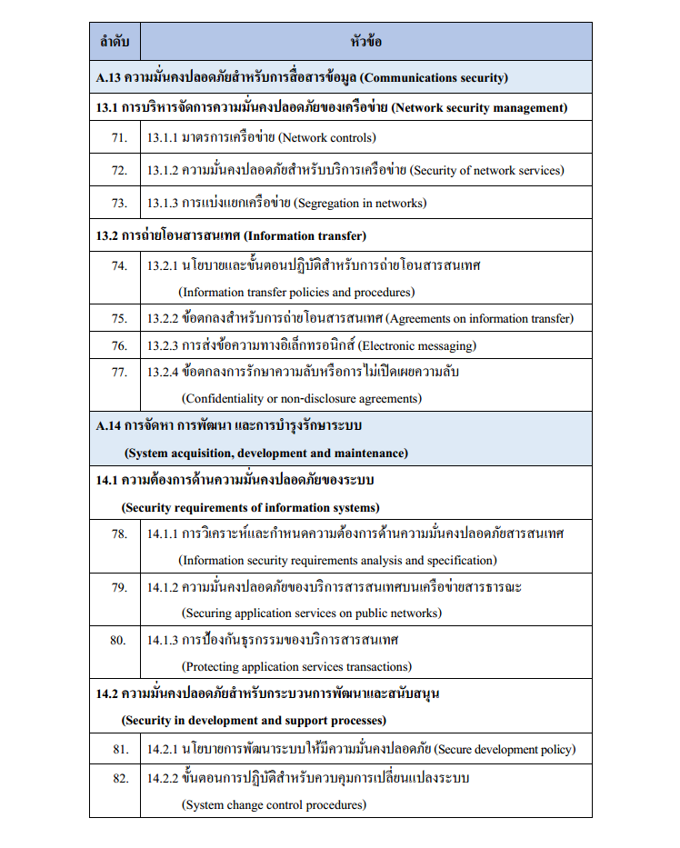
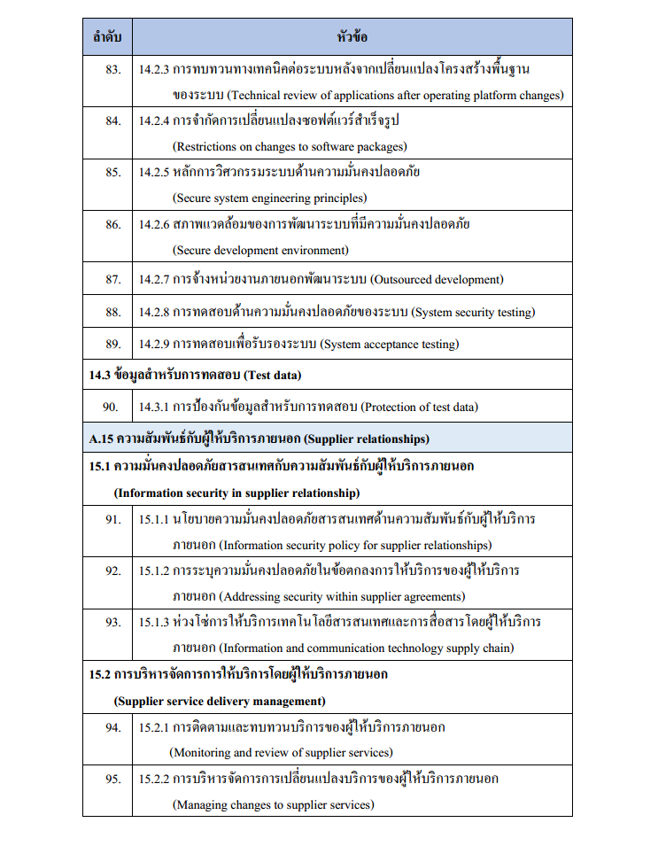
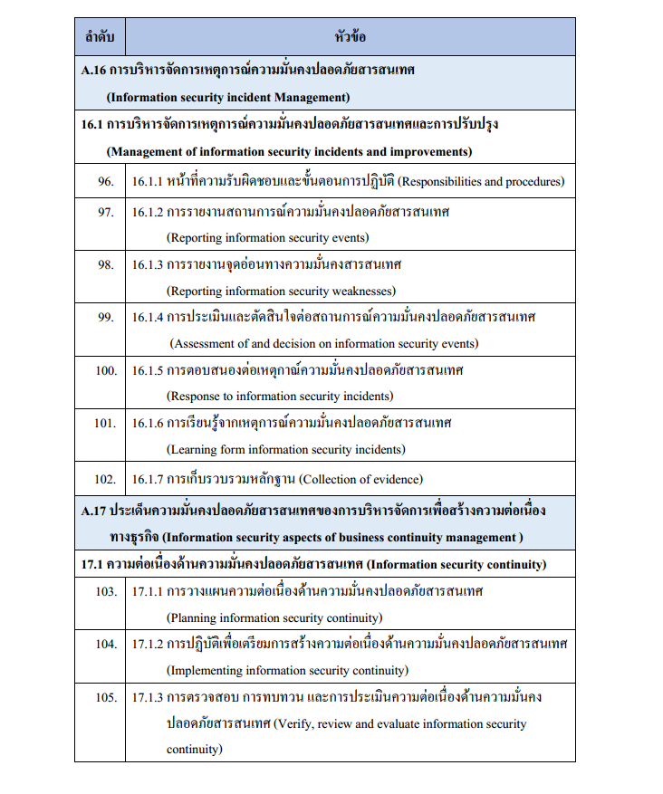
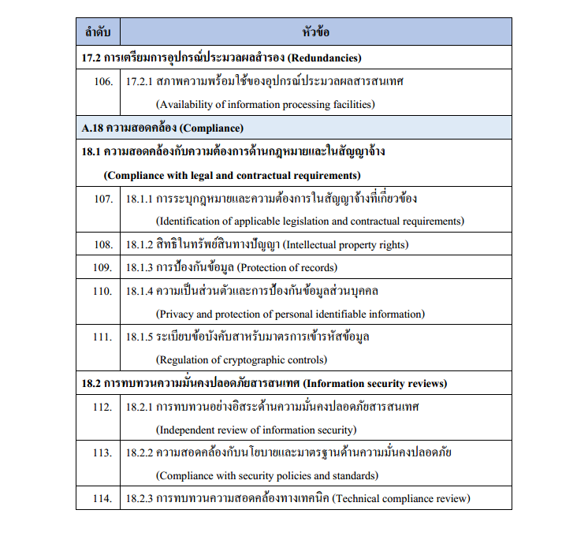

มาตรฐาน ISO 27001 (Information Security Management System-ISMS) มาตรฐานการจัดการความมั่นคงปลอดภัยของสารสนเทศ ประกอบด้วยข้อกำหนดที่ครอบคลุมถึงการ จัดทำ นำไปปฏิบัติ ทบทวนและเฝ้าระวัง รักษาความต่อเนื่อง รวมถึงปรับปรุงระบบให้สอดคล้องกับสถานะการณ์ ผู้ที่ประยุกต์ใช้มาตรฐานนี้ต้องจัดทำเอกสารให้ครอบคลุมข้อกำหนดข้างต้น และระบบที่จัดทำขึ้นนี้จะต้องเหมาะสมกับความเสี่ยงเชิงธุรกิจขององค์กร
มาตรฐานนี้ใช้แนวทาง PDCA (Plan-Do-Check-Act) เป็นโครงสร้างเช่นเดียวกับมาตรฐานที่รู้จักกันอย่างแพร่หลาย เช่น ISO 9001(Quality Management System-QMS) ISO14001(Environmental Management System-EMS) ดังนั้นองค์กรที่มีระบบ QMS,EMS อยู่แล้วสามารถเข้าใจแนวทางของ ISMS ได้ไม่ยากนัก เพียงแต่เปลี่ยนมุมมองมาสนใจที่ Information และวางแนวทางบริหารให้เกิดความมั่นคงปลอดภัย โดยผ่านกระบวนการ วางแผน (Plan) นำไปปฏิบัติ(Do) ทบทวนและตรวจสอบ(Check) และแก้ไขปรับปรุง (Act)
จะเห็นได้ว่าหลักการ PCDA สอดคล้องกับสามัญสำนึกทั่วไป คือก่อนทำอะไรควรมีการวางแผนล่วงหน้า พิจารณาให้รอบคอบแล้วลงจึงมือทำตามแผน หลังจากนั้นก็ตรวจสอบผลลัพธ์ว่าเป็นไปตามแผนที่วางไว้หรือไม่ หากไม่เป็นไปตามแผนก็ต้องแก้ไขปรับปรุง และนำบทเรียนมาพิจารณาในการวางแผนก่อนทำงานครั้งต่อไป ซึ่งแนวคิดนี้สามารถประยุกต์ใช้ในการทำมาตรฐาน ISO/IEC 27001 ได้เป็นอย่างดี การที่องค์กรหนึ่งผ่านการรับรองมาตรฐานระบบการความมั่นคงปลอดภัยของสารสนเทศ ISO 27001 นั้นหมายถึง องค์กรดังกล่าวได้นำข้อกำหนดของมาตรฐาน ISO 27001 มาประยุกต์ใช้อย่างครบถ้วน และมีหลักฐานที่เป็นรูปธรรมให้เชื่อได้ว่าองค์กรดังกล่าวมีระบบการจัดการความมั่นคงปลอดภัยของสารสนเทศที่ได้มาตรฐานสากล
โครงสร้างของมาตรฐาน ISO 27001:2013 แบ่งเนื้อหาออกเป็น 14 หัวข้อ (Domain) ซึ่งแต่ละหัวข้อประกอบด้วยวัตถุประสงค์จํานวนแตกต่างกัน รวมแล้วจํานวน 35 วัตถุประสงค์ (Control objectives) และภายใต้วัตถุประสงค์แต่ละข้อประกอบด้วยมาตรการในการรักษาความมันคงปลอดภัย แตกต่างกัน รวมแล้ว 114 ข้อ (Controls).
ข้อกําหนดด้านการรักษาความมั่นคงปลอดภัย

ข้อกำหนดด้านการรักษาความมั่นคงปลอดภัยและมาตรการควบคุม









Reference :
- สํานักงานพัฒนาวิทยาศาสตร์และเทคโนโลยีแห่งชาติ, 2560; บริษัท ที-เน็ต จํากัด, 2556; ภูมิพัฒน์ สุขศรีใส, 2559
- http://dspace.spu.ac.th/bitstream/123456789/5754/1/เล่มสารนิพนธ์แบบรวมเล่ม.pdf
- http://www.club27001.com/2013/08/isoiec-27001_21.html